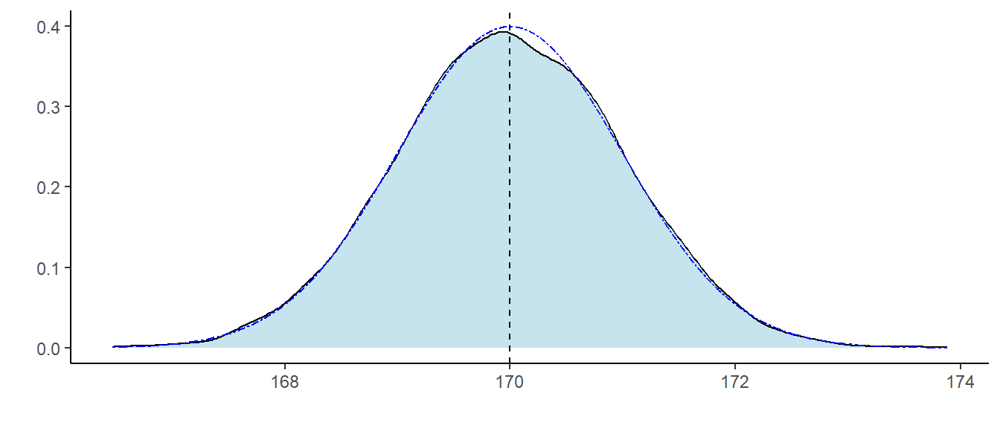
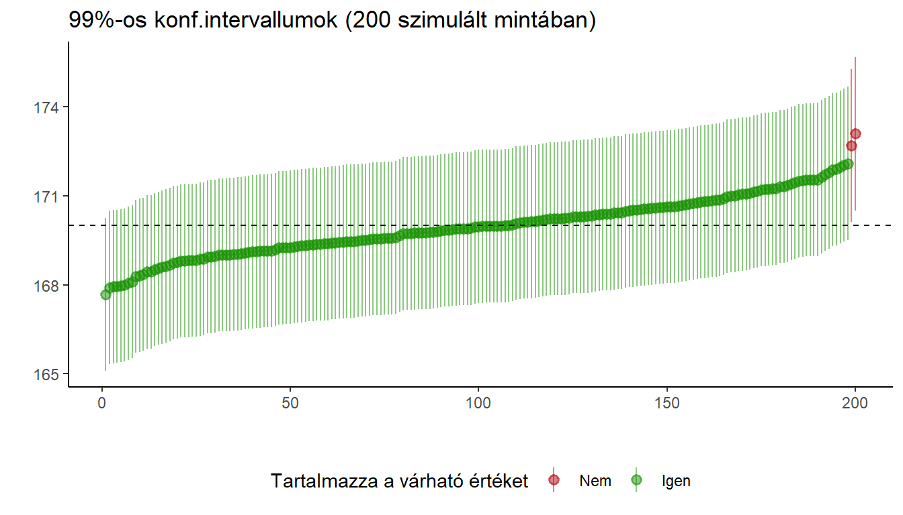
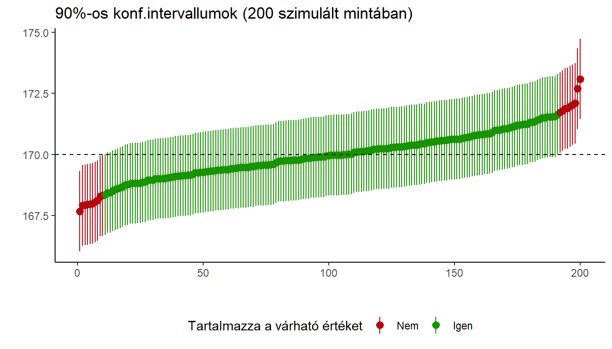
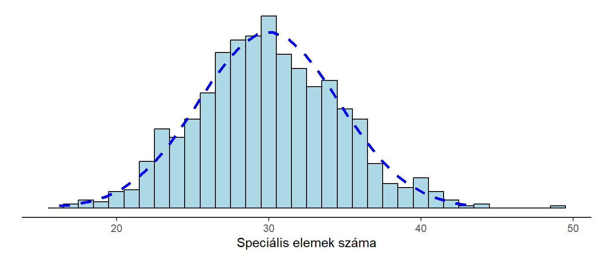

A leíró statisztikáknál megnéztük, hogyan kell becsülni (többet között) a kvantitatív változó várható értékét (a számtani átlaggal) és a szórást (a korrigált tapasztalati szórással). Ezentúl a változó várható értékét (ez a populációra vonatkozik) a görög mű (\(\mu\)), a szórását pedig a kis szigma (\(\sigma\)) fogja jelölni. Ezek tehát a populációra vonatkozó értékek, amelyeket nem szoktunk ismerni. A becsléseket \(\overline{X}\) (átlag) és s* (szórás) jelöli majd. Ezeket a mintából számítjuk.
A normális eloszlást pedig két paraméterrel adjuk meg (ld. összefoglaló): a várható értékkel és szórással: N(μ, σ) lesz a bevett jelölés. Ez az eloszlás azért fontos, mert sok változó, illetve statisztika (pl. átlag, különböző tesztek eredményei) normális eloszlású, vagy pedig sok statisztikai módszerhez ilyen eloszlásra van szükség.
Pl.: a testmagasságok egy populációban N(170, 7) eloszlásúak, vagyis 170 cm a várható magasság, és ahhoz képest 7 cm a várható eltérés (szórás).
Az átlag és szórás becsléséhez vegyük hozzá, hogy egy-egy érték valószínűségét a relatív gyakorisággal becsülhetjük (p-vel jelöljük): Például, ha egy 1000 fős mintában 470-en beszélnek angolul, akkor az angol-tudás valószínűségét a populációban \(p = \frac{k}{N} = \frac{470}{1000} = 0,47 = 47\%\)-ra becsülhetjük.
Mivel a becslés eredménye egy-egy szám volt mindhárom esetben, ezeket pontbecslésnek nevezzük. Ezekkel kapcsolatban fontos tudatában lennünk, hogy a mintaátlag, a tapasztalati szórás, a relatív gyakoriság is (és később ez igaz lesz minden más statisztikára is) változók, mivel mintáról mintára eltér az értékük. Biztosak lehetünk tehát, hogy a mintából kapott értékeink eltérnek a tényleges populációs értékektől.
A fenti állításokat egy szimuláció segítségével tudjuk alátámasztani.
Vegyünk három mintát egy μ = 170 várható értékű és σ = 10 szórású normális eloszlású változóból. Ezt jelöljük úgy, hogy \(\xi \sim N(170, 10)\), vagyis a kszível jelölt változó 170 várható értékű, 10 szórású normális eloszlást követ.
| Elemszám | Átlag | Szórás | |
|---|---|---|---|
| 1. minta | 100 | 169.33 | 8.62 |
| 2. minta | 500 | 169.34 | 9.65 |
| 3. minta | 200 | 169.94 | 9.73 |
Látható, hogy mintáról mintára kisebb-nagyobb mértékben eltér az átlag és a szórás, és a kapott értékek a tényleges értékektől is eltérnek. Ugyanez lenne a helyzet valamilyen tulajdonság relatív gyakoriságával, mint azt néztük is annak idején a hipergeometrikus eloszlásnál (pl. a selejt termékek száma mintáról mintára változott). Az egyik mintában pl. 30% a szőkék aránya, egy másik mintában 32%, egy harmadikban 27%. Tehát ez is változó.
Ha pedig az átlag, szórás és relatív gyakoriság változók, akkor ezeknek is van várható értéke és szórása. Előbbi megegyezik a változó várható értékével (a mintaátlag esetében), szórásával (a tapasztalati szórás esetében) vagy pedig az adott esemény valószínűségével (a relatív gyakoriság esetén). Ezt nevezzük a becslés torzítatlanságának.
A becslések szórását pedig az adott statisztika standard hibájának nevezzük. Ez is végső soron csak egy szórás, de a külön név talán segít megkülönböztetni az adott statisztika szórását a változónak magának a szórásától. Hamarosan megnézzük, mennyi a st. hiba az egyes esetekben.
A pontbecslés, illetve a standard hiba (vagy az arra vonatkozó becslés) segítségével megadhatunk intervallumbecslést is. Egy olyan intervallumot, amelybe az ismeretlen, becsülni kívánt paraméter (pl. a várható érték, szórás, arány) megadott valószínűséggel beleesik. Ezt az intervallumot konfidenciaintervallumnak, a valószínűséget konfidenciaszintnek nevezzük, és \(1 - \alpha\)-val jelöljük, az intervallum határait pedig konfidenciahatároknak. A konfidenciaszintet mi választjuk: bevett értéke a társadalomtudományokban 95%, de ez csak irányadó, ennél kisebb vagy nagyobb értéket is választhatunk (pl. 90%-ot vagy 99%-ot).
Az átlag pontbecsléséről mondtuk, hogy torzítatlan, vagyis várható értéke egyenlő a populációs várható értékkel. Ezt úgy tudjuk elképzelni, hogy ha ismételten tudnánk mintákat venni, akkor az átlagok átlagos értéke a várható értéket közelítené meg.
Az átlag esetében pedig a standard hiba értéke: \[SE=\frac{\sigma}{\sqrt{N}}\] A fenti képletben σ a változó szórása, N pedig a mintaelemszám.
Nézzünk erre is egy szimulációt: Tegyük fel, hogy a testmagasság egy populációban a fent is említett N(170, 10) eloszlást követi. Vegyünk ebből a populációból 100 elemű mintákat. A fentiek értelmében arra számítunk, hogy a mintaátlag normális eloszlású lesz, várható értéke 170 lesz, a standard hibája (szórása) pedig \(SE=\frac{10}{\sqrt{100}}=1\). A gyakorlatban egy mintát tudnánk venni, és nem ismernénk sem a tényleges várható értéket, sem a szórást. De erre tartjuk a szimulációkat. Vegyünk 10 000 mintát, és nézzük a mintaátlag eloszlását! (A kék szaggatott az elméleti eloszlás, a fekete szaggatott vonal pedig a mintaátlagok átlaga)

A legkisebb átlag, amit kaptunk 166.27 volt, a legnagyobb pedig 173.51, de az ábrán látható, hogy az átlagok túlnyomó többsége 168 és 172 közé esik. Az átlagok átlaga pedig 169.98, a szórásuk pedig 1. Ez elég közel esik a várakozásainkhoz: 170-es átlaghoz és 1-es standard hibához.
Korábban, a normális eloszlásnál néztük egyrészt, hogyan tudunk adott valószínűségeknek megfelelő területeket lehatárolni, illetve hogyan tudunk standard és nem standard normális eloszlásokat egymássá konvertálni. Így például láttuk, hogy a standard normális eloszlás értéke 95%-os valószínűséggel -1,96 és +1,96 közé esik. Ezeknek a határoknak a fenti N(170, 1) eloszlás esetében a
\[170 \pm 1.96*1=[168,04;171,96]\]
határértékek felelnek meg. Vagyis a mintaátlag 95%-os valószínűséggel ezek közé fog esni. A fenti 10 000 mintából 94.98%-ban esett a mintaátlag a megadott tartományba (Kb. 95% - kis eltérések mindig vannak a gyakorlatban)
Jó hír: a várakozásaink bejöttek, az átlag tényleg úgy viselkedik, ahogy kell neki. További jó hír, hogy a centrális határeloszlás tétel miatt az átlag akkor is normális eloszlású, ha a változó maga nem. Ezt itt is ellenőrizhetik, ha kicsit eljátszanak a beállításokkal. (Ne felejtsék kipipálni a "Theoretical"-t)
Az alábbi ábrán egy egyenletes és egy exponenciális változóból vett, 100 elemű mintákból számított, mintaátlagok eloszlásait láthatják:
Figyelem: az ábrák a szimulált átlagok (esetenként 10 000 db 100 elemű mintából számított) sűrűségfüggyvényei, nem pedig a változóké, amelyek teljesen más alakú eloszlást (egyenletest és exponenciálist) követnek.
A várható értékre vonatkozó intervallumbecslés a fentieken alapul. Viszont a gyakorlatban egyetlen mintával dolgozunk, és nem tudjuk, mennyi a tényleges várható érték (és azt sem, mennyi a tényleges szórás, de egyszerre egy problémával birkózzunk meg)
Azt ugyan nem tudjuk, a kapott átlagunk magasabb, vagy alacsonyabb a tényleges várható értéknél, de azt tudjuk, hogy nagy valószínűséggel legfeljebb mennyire tér el tőle.
Tegyük fel, hogy a mintából 169,13 átlagot kaptunk. Azt tudjuk, hogy a változó (!) szórása 10, a mintánk pedig 100 elemű. Vagyis a mintaátlagok 95%-os valószínűséggel legfeljebb 1.96 standard hibányira, vagyis \(\pm1.96*\frac{10}{\sqrt{100}}=\pm1.96\)-nyira térnek el a várható értéktől. Mivel pedig a különbség szimmetrikus, az egészet megfordíthatjuk, és azt mondhatjuk, hogy 95%-os valószínűséggel a várható érték legfeljebb \(\pm1.96\)-nyira tér el a mintaátlagtól.
Mindez képletszerűen:
\[ \overline{X} \pm 1,96* \frac{\sigma}{\sqrt{N}}\]
Általánosan (hogy ne csak 95%-os intervallumot tudjunk számítani):
\[ \overline{X} \pm z_{1-\frac{\alpha}{2}}* \frac{\sigma}{\sqrt{N}}\] Ebben \(z_{1-\frac{\alpha}{2}}\) a st. normális eloszlásnak az adott 1 - α konfidenciaszinthez tartozó értéke. FIGYELEM: Mi 1 - α konfidenciaszintre törekszünk, de ehhez a táblázatban az \(z_{1-\frac{\alpha}{2}}\) valószínűséget kell megkeresni, tehát pl. 95%-hoz 0,975-öt.
Mindez szintén megmutatható egy szimuláció segítségével. Korábban megnéztük, hogy a minták kb. 95%-ában az átlag a populációbeli várható értéktől legfeljebb 1,96 standard hibányira volt. Nézzük meg a 10 000 szimulált minta közül az esetek hány százalékában van a várható érték (170) a mintaátlagtól legfeljebb 1,96 st. hibányira, vagyis a fenti szabályokat betartva megszerkesztett intervallumon belül: 94.98%
Vessék ezt össze a néhány bekezdéssel feljebb kapott aránnyal - nem véletlen, hogy egyezik: ha az átlag beleesik a várható érték 1,96 st. hibányi környezetébe, akkor a várható érték is beleesik az átlag 1,96 st. hibányi környezetébe. A szimuláció tehát megerősíti, hogy ha az egyetlen mintánkból becsült átlag köré szerkesztjük meg az intervallumot, a várható érték az elérni kívánt megbízhatósággal (pl. 95%) bele fog esni.
Mi a különbség a 95%, 90% és 99%-os intervallumok között?
Az alábbi ábra véletlenszerűen kiválasztott 200 mintára számított 95%-os konfidenciaintervallumokat mutat (a mintákat az átlag szerint sorbaraktuk):
Látható, hogy vannak esetek, amikor a konfidenciaintervallum nem tartalmazza a 100-as várható értéket. Ezért 95%-os és nem 100%-os. Ezzel sajnos számolnunk kell. A középső szaggatott vonal az egyébként ismeretlen várható érték, a felső és alsó pontozott vonalak pedig a várható érték köré felrajzolt konfidenciaintervallumok. Élesben ezeket sem tudjuk kiszámítani, de látszik, hogy épp azoknak a mintáknak az esetében "lóg rá" a konfidenciaintervallumot mutató sáv a várható értékre, amelyek átlaga a szaggatott vonalak között van.
Ha nagyobb (99%) megbízhatóságot szeretnénk, növelni kell az intervallum szélességét:

De választhatunk kisebb (90%) konfidenciaszintet is:

Az átlagok mindhárom esetben ugyanazok. Látható, hogy minél nagyobb a konfidenciaszint, annál kevesebb esetben nem tartalmazza az intervallum a becsült paramétert. Cserébe viszont a becslési intervallumok hosszabbak. A fenti képletben az intervallum hosszát a \(\pm z_{1-\frac{\alpha}{2}}* \frac{\sigma}{\sqrt{N}}\) rész adja meg: az intervallum hossza \(2* z_{1-\frac{\alpha}{2}}* \frac{\sigma}{\sqrt{N}}\) Látható, hogy az intervallum hossza három tényezőtől függ:
Egy 100 elemű mintában a mintaátlag 169.28. A populációban a szórás értéke 10. Adjon intervallumbecslést a várható értékre \(1-\alpha=0.95\) konfidenciaszint mellett!
Az alábbi képletet használjuk:
\[\overline{X} \pm z_{1-\frac{\alpha}{2}}* \frac{\sigma}{\sqrt{N}}\] Az átlag, szórás és mintanagyság ismert, így ezeket csak behelyettesítjük. A \(z_{1-\frac{\alpha}{2}}\) értéket a standard normális eloszlás táblázatából kapjuk: Ha \(1-\alpha = 0,95\) akkor a táblázatos valószínűség: \(1-\frac{\alpha}{2} = 0,975\). Ennek a táblázatban az 1,96-os érték felel meg.
Behelyettesítve:
\[ \overline{X} \pm z_{1-\frac{\alpha}{2}}* \frac{\sigma}{\sqrt{N}}=169.28 \pm1,96* \frac{10}{\sqrt{100}}\]
A két határérték: 167.32 és 171.24.
Válasz:
A populációban a változó várható értéke 95%-os megbízhatósággal a 167.32 és 171.24 közötti intervallumba esik.
Az előző részben megnéztük, hogyan tudunk intervallumbecslést adni a várható értékre, felhasználva azt, amit a normális elszlású változókról tudunk. Ebben azonban egy olyan adatot használtunk (a \(\sigma\) populációs szórást), amelyet jellemzően nem ismerünk, hanem a mintából próbálunk becsülni. Emiatt ez is egy változó, és mint ilyen, tudatában kell lennünk, hogy mintáról mintára változik, ingadozik, és ezt a bizonytalanságot be kell kalkulálni az intervallumbecslésbe.
A megoldás az lesz, hogy a standard normális eloszlás helyett az arra sok tekintetben hasonlító Student-féle t-eloszlást használjuk. Ennek egy paramétere van: az ún. szabadságfok (df). Akárcsak a st. normális eloszlás, ez is szimmetrikus, várható értéke 0, ráadásul minél nagyobb szabadságfokú, annál inkább megközelíti a st. normális eloszlást. Ezt úgy mondjuk, a kettő aszimptotikusan ekvivalens (ha df = ∞ lenne, akkor egybeesne a st. normálissal).
Különböző szabadságfokú t-eloszlások és a st. normális eloszlás sűrűségfüggvényei:
Látható, hogy minél kisebb a szabadságfok, annál nagyobb terület van messzebb a középső tengelytől: a szélek nagyobbak, a középső rész kisebb. Ez azzal jár, hogy kisebb szabadságfok esetén (tehát kisebb mintáknál) még nagyobb intervallumra van szükség ahhoz, hogy megadott konfidenciaszintet elérjünk.
A t-eloszlás használata annyit változtat az intervallumbecslésen, hogy a korábbi képletben \(z_{1-\frac{\alpha}{2}}\)-t lecseréljük \(t_{df; 1-\frac{\alpha}{2}}\)-re, vagyis a df szabadságfoknak és \(1-\frac{\alpha}{2}\) valószínűségnek megfelelő táblázatos értékre, a \(\sigma\) helyett pedig a becsült \(s\ast\) szórásértéket használjuk. Ebben az esetben is az \(1-\frac{\alpha}{2}\) valószínűséget használjuk, hogy az \(1-\alpha\) konfidenciaszintet elérjük. A valószínűséget ugyanúgy kell kiszámítani a választott konfidenciaszintből, mint korábban. Tehát pl. 95%-os konfidenciaintervallumhoz a táblázatban a 0,975-ös oszlopot nézzük. A sort a szabadságfok adja meg.
A képlet tehát ez lesz:
\[\overline{X} \pm t_{df;1-\frac{\alpha}{2}}* \frac{s^{\ast}}{\sqrt{N}}\] \[df = N-1\]
Egy 100 elemű mintában a mintaátlag 169.28, a szórás pedig 10.65. Adjon intervallumbecslést a várható értékre \(1-\alpha=0.95\) konfidenciaszint mellett!
Mivel itt most a szórás is a mintából becsült, ezért az alábbi képletet használjuk:
\[\overline{X} \pm t_{df;1-\frac{\alpha}{2}}* \frac{s^{\ast}}{\sqrt{N}}\] Az átlag, szórás és mintanagyság ismert, így ezeket csak behelyettesítjük. A \(t_{df;1-\frac{\alpha}{2}}\) értéket a t-eloszlás táblázatából kapjuk: Ha \(1-\alpha = 0,95\) akkor a táblázatos valószínűség: \(1-\frac{\alpha}{2} = 0,975\). A szabadságfok \(N-1 = 99\). Mivel azonban ez nem szerepel a táblázatban, választani kell a 60-as és 120-as sor között (nem kell választani, ha kalkulátort használnak, mert az kezelni tudja a 99-es sz.fokot). A 60-ast választjuk, mert ezzel kicsit nagyobb intervallumot kapunk, következésképp kicsit nagyobb konfidenciaszintet érünk el. Inkább nagyobb, mint kisebb konfidenciaszintre törekszünk, a 120-as sz.fok pedig 95%-nál egy kicsit kisebb konf.szintet eredményezne. A 60-as df-nek a táblázatban a 2,00 érték felel meg.
Behelyettesítve:
\[\overline{X} \pm t_{df;1-\frac{\alpha}{2}}* \frac{s^{\ast}}{\sqrt{N}}=169.28 \pm 2* \frac{10.65}{\sqrt{100}}=169.28\pm2* 1.065=169.28 \pm 2.13\]
A két határérték: 167.15 és 171.41.
Válasz:
A populációban a változó várható értéke 95%-os megbízhatósággal a [167.15;171.41] intervallumba esik.
Az átlaghoz (és szóráshoz) hasonlóan a mintából becsült arányok (relatív gyakoriságok) is változók. A nevezetes eloszlásoknál vettük, hogy a visszatevés nélküli mintavétel típusú folyamatok hipergeometrikus eloszlású változókat eredményeznek. Ennek paraméterei a populáció mérete (N), a vizsgált típusú elemek száma a populációban (K) és a mintanagyság (n). Várhatóan \(E(\xi)=n*\frac{K}{N}\) vizsgált típusú elem kerül a mintába, a szórás pedig
\[D(\xi)=\sqrt{n*\frac{K}{N}*(1-\frac{K}{N})*\frac{N-n}{N-1}}\] A gyakorlatban viszont nem kell a fenti, bonyolult szórásképletet használni, mivel legtöbbször az n mintanagyság csak töredéke a populáció méretének, ezért \(\frac{N-n}{N-1}\) ez szinte 1-gyel egyenlő. Pl. 10 milliós populációból vett 1000 fős minta esetében a tört értéke 4 tizedesre kerekítve 0.9999.
A gyakorlatban a binomiális eloszlással közelítik az értéket, amely a visszatevéses mintavételnek megfelelő eloszlás. Ha nagy a populáció és kicsi a minta, még ha visszatevéses is a mintavétel, nagyon kicsi a valószínűsége, hogy bárki is többször szerepeljen a mintában. Legyen \(p=\frac{K}{N}\) és hagyjuk el az utolsó tagot, így a binomiális eloszlás szórásképletét kapjuk:
\[D(\xi)=\sqrt{n*p*(1-p)}\]
A binomiális eloszlást pedig jól tudjuk normális eloszlással közelíteni, mégpedig \(N(n * p;\sqrt{n* p*(1-p)})\) eloszlással.
Az alábbi ábrán láthatják, hogy a normális eloszlás görbéje valóban jól követi a változó hisztogramját:

A mintavétel egy olyan szimulált 1 milliós populációból történt, amelyben van 300 ezer bizonyos típusú elem. A szemléltetés kedvéért 1000 db 100-elemű mintát vettünk. Arra számítunk tehát, hogy a mintában is 30% lesz a speciális elemek aránya, tehát várhatóan 30 elem.
A szórás, ha a hipergeometrikus eloszlás képletével számolunk: 4.58
Ha a binomiális eloszlás képletével számolunk: 4.58
Most már csak annyit kell változtatunk, hogy a darabszámokból arányokat kapjunk. Mi ugyanis nem azt akarjuk megbecsülni, hogy N elemre hány db előfordulás jut, hanem, hogy mennyi az a p valószínűség, amellyel egy elem adott típusú lesz. Az arányt úgy kapjuk, hogy a darabszámot elosztjuk a mintanagysággal: ez a már említett relatív gyakoriság \(p = \frac{k}{N}\)
A várható érték éppen a populációban érvényes valószínűség. A szórás úgy változik, hogy \(\sqrt{n* p* (1-p)}\) szórást elosztjuk a mintanagysággal:
\[\frac{\sqrt{n* p* (1-p)}}{n}=\sqrt{\frac{n* p* (1-p)}{n^2}}=\sqrt{\frac{p* (1-p)}{n}}\] Ez lesz az arány becslésének standard hibája.
Az intervallumbecslés képlete ugyanúgy épül fel, mint korábban: a ponbecslés ±valahányszor a standard hiba. Az arány esetében így kapjuk az alábbi képletet, ahol N a mintaelemszám, p a relatív gyakoriság, \(z_{1-\frac{\alpha}{2}}\) pedig a st. normális eloszlás konfidenciaszintnek megfelelő értéke:
\[p \pm z_{1-\frac{\alpha}{2}}* \sqrt{\frac{p* (1-p)}{N}}\]
A képletben a \(\pm z_{1-\frac{\alpha}{2}}* \sqrt{\frac{p* (1-p)}{N}}\) részből következően az intervallum hossza \(2* z_{1-\frac{\alpha}{2}}* \sqrt{\frac{p* (1-p)}{N}}\). Látható, hogy a becslési intervallum hossza három tényezőtől függ:
Nézzük meg, hogyan függ az aránytól: \(p* (1-p)\) egy másodfokú függvény:
\[ p(1-p)=-p^2+p\]
A másodfokú függvények \(y=ax^2+bx+c\) képlettel írhatók fel. Függvényük egy parabola. Ha a > 0, akkor konvex parabola, ha a < 0, akkor konkáv.
Itt most a = -1 (ez a négyzetes tag szorzótényezője: -1p2), ezért konkáv.
A parabola a 0 < p < 1 értékekre, tehát a [0;1] intervallumon van értelmezve, hiszen valószínűségről van szó, ami nem lehet sem negatív, sem 1-nél nagyobb.
A függvény a 0 értéket a p = 0 és p = 1 pontokban veszi fel: -02+0 = 0 és -12+1 = 0.
Maximumát "félúton", tehát p = 0,5 értéknél veszi fel: -0,52+0,5 = 0,25. Vagyis minél közelebb van a becsült valószínűség 0,5-höz, annál nagyobb intervallummal tudjuk csak becsülni.
Íme a függvény ábrája:
Tegyük fel, hogy egy 200 elemű mintában "A" párt szimpatizánsainak aránya 25%. Adjanak intervallumbecslést 95%-os konfidenciaszint mellett "A" párt szimpatizánsainak populációbeli arányára!
Megkeressük a konfidenciaszinthez tartozó \(z_{1-\frac{\alpha}{2}}\) értéket (módját ld. fent): ez 1,96. Behelyettesítünk:
\[p \pm z_{1-\frac{\alpha}{2}}* \sqrt{\frac{p* (1-p)}{N}}=0,25\pm1,96* \sqrt{\frac{0,25* (1-0,25)}{200}}=0,25\pm0,0588\]
A populációban "A" párt szimpatizánsainak aránya 95%-os megbízhatósággal a [19,12%; 30,88%] intervallumba esik.
Ez teljesen másképp működik, és nem is képezi részét az alap tananyagnak, úgyhogy inkább hardcore hallgatóknak ajánlom. Maga a módszer egyébként nem vészesen nehéz. Az alábbi képletbe helyettesítünk:
\[\left[\frac{(N-1)* s^{*2}}{\chi_{N-1;1-\frac{\alpha}{2}}^2}; \frac{(N-1)* s^{*2}}{\chi_{N-1;\frac{\alpha}{2}}^2} \right]\] Az \(s^{\ast2}\) a becsült szórás négyzete, N az elemszám, \(\chi_{N-1;1-\frac{\alpha}{2}}^2\) és \(\chi_{N-1;\frac{\alpha}{2}}^2\) pedig egy új eloszlás, a \(\chi^2\)-eloszlás (e: khí-négyzet) N-1 szabadságfoknak és \(1-\frac{\alpha}{2}\), illetve \(\frac{\alpha}{2}\) valószínűségeknek megfelelő értékei. A két érték a két végpont lesz, de szórásnégyzetekként, úgyhogy, ha a szórást szeretnénk kiszámítani, mindkettőnek a pozitív négyzetgyökét kell venni.
A 30 elemű mintából becsült szórás 15. Adjanak 95%-os intervallumbecslést a szórásra!
Ha \(1-\alpha = 0,95\), akkor \(1-\frac{\alpha}{2}=0,975\) és \(\frac{\alpha}{2}=0,025\). A \(\chi^2\)-eloszlás táblázatában kikeressük a megfelelő értékeket: N-1 = 29. sor és 0,025-ös és 0,975-ös oszlop: 16,0 és 45,7
Behelyettesítünk: \[\left[\frac{29* 15^2}{45,7}; \frac{29* 15^2}{16,0} \right]=\left[142,78; 407,81 \right]\]
Gyököt vonunk mindkét végpontból: \[\left[11,95; 20,19\right]\]
A változó szórása a populációban 95%-os megbízhatósággal ebbe az intervallumba esik.
Intervallumbecslés átlagra
Szükségünk lesz: egy átlagra, szórásra, mintaelemszámra, illetve ki kell választani, hogy milyen konfidenciaszintet szeretnénk.
Átlagra adott intervallumbecslés elméleti szórással:
Példa: Legyen egy N = 200 elemű mintában a magasság átlaga \(\overline{X}=169,3\), a populációban pedig a magasság szórása σ=7. Válasszunk ezúttal 90%-os konfidenciaszintet!
Átlagra adott intervallumbecslés becsült szórással:
Példa: Legyen egy N = 150 elemű mintában a tavaly elolvasott könyvek átlaga 13,5, mintából becsült szórása pedig 4,2. Legyen a választott konfidenciaszint 99%!
Intervallumbecslés arányra
Szükségünk van: becsült arányra, mintaelemszámra és választanunk kell konfidenciaszintet.
Példa: Tegyük fel, hogy 300 elemű mintában 90 szőke van. Adjünk intervallumbecslést a szőkék arányára a populációban, 95%-os szinten!
Konfidenciaintervallum hossza
Az intervallum hosszát mindig a ±-os rész adja: az intervallum hossza ennek kétszerese: \[2* z_{1-\frac{\alpha}{2}}* \frac{\sigma}{\sqrt{N}}\] \[2* t_{df;1-\frac{\alpha}{2}}* \frac{s^{\ast}}{\sqrt{N}}\] \[2* z_{1-\frac{\alpha}{2}}* \sqrt{\frac{p* (1-p)}{N}}\]
Ha ismerjük a paramétereket, akkor behelyettesítve megkapható, mekkora az intervallum hossza.
Arány becslésénél sokszor a maximális hiba érdekel minket: ehhez p = 0,5-öt kell behelyettesíteni. (Ha nem világos, miért, a választ megtalálják a vonatkozó résznél)
Ha arra vagyunk kíváncsiak, milyen elemszám fölött lesz az intervallum legfeljebb adott hosszúságú (jelöljük ezt mondjuk d-vel), akkor a képletekből ki kell fejezni N-t: \[N\ge \left(2* z_{1-\frac{\alpha}{2}}* \frac{\sigma}{d}\right)^2\] \[N\ge \left(2* t_{df;1-\frac{\alpha}{2}}* \frac{s^{\ast}}{d}\right)^2\]
Ezt a legutóbbit ritkán nézzük a gyakorlatban, mivel ezt a számítást bonyolítja, hogy maga a t-érték is függ N-től.
Az arány becslésénél jellemzően a maximális hibát akarjuk, hogy az adott érték alatt legyen. A maximális hibát 0,5-ös becsült aránynál kapjuk (ld. fönt).
Ha az intervallum hosszával dolgozunk, akkor az alábbi képletet kapjuk: \[N\ge4* z_{1-\frac{\alpha}{2}}^2* \frac{0,5* (1-0,5)}{d^2}\]
Ha ± értékekkel dolgozunk (pl. a becslés maximális hibája ne legyen nagyobb ±2%-nál), akkor a 4-gyel (22) való szorzás kiesik: \[N\ge z_{1-\frac{\alpha}{2}}^2* \frac{0,5* (1-0,5)}{d^2}\]
Példa: Tegyük fel, hogy a magasság szórása a populációban 7 cm. Mekkora mintát kell ahhoz vennünk, hogy a magasság várható értékét legfeljebb 2 cm hosszú intervallummal becsüljük 95%-os megbízhatósággal?
\[N\ge \left(2* z_{1-\frac{\alpha}{2}}* \frac{\sigma}{d}\right)^2\] \[N\ge \left(2* 1,96* \frac{7}{2}\right)^2\] \[N\ge 188,2384\]
Vagyis legalább 189 elemű mintára van ehhez szükség.
Példa: Mekkora minta kell ahhoz, hogy az aránybecslés maximális hibája 90%-os megbízhatóság mellett ±3% legyen?
a) megoldás: \[N\ge z_{1-\frac{\alpha}{2}}^2* \frac{0,5* (1-0,5)}{d^2}\] \[N\ge 1,65^2* \frac{0,5* (1-0,5)}{0,03^2}\] \[N\ge 756,25\]
b) megoldás (±3% az d = 6%-os intervallumhosszt jelent) \[N\ge4* z_{1-\frac{\alpha}{2}}^2* \frac{0,5* (1-0,5)}{d^2}\] \[N\ge4* 1,65^2* \frac{0,5* (1-0,5)}{0,06^2}\] \[N\ge 756,25\]
Vagyis mindkét esetben azt kapjuk, hogy legalább 757 elemű mintára van ehhez szükség.
Példa: Mekkora az arány becslésének maximális hibája 99%-os konfidenciaszint mellett egy 500 elemű mintából? \[d=2* z_{1-\frac{\alpha}{2}}* \sqrt{\frac{0,5* (1-0,5)}{N}}\]
\[d=2* 2,58* \sqrt{\frac{0,5* (1-0,5)}{500}}\]
\[d=0,115=11,5\%=\pm5,75\%\]
500 elemű mintából 99%-os konf.szinten legfeljebb ±5,75%-os hibahatár mellett tudunk becsülni.